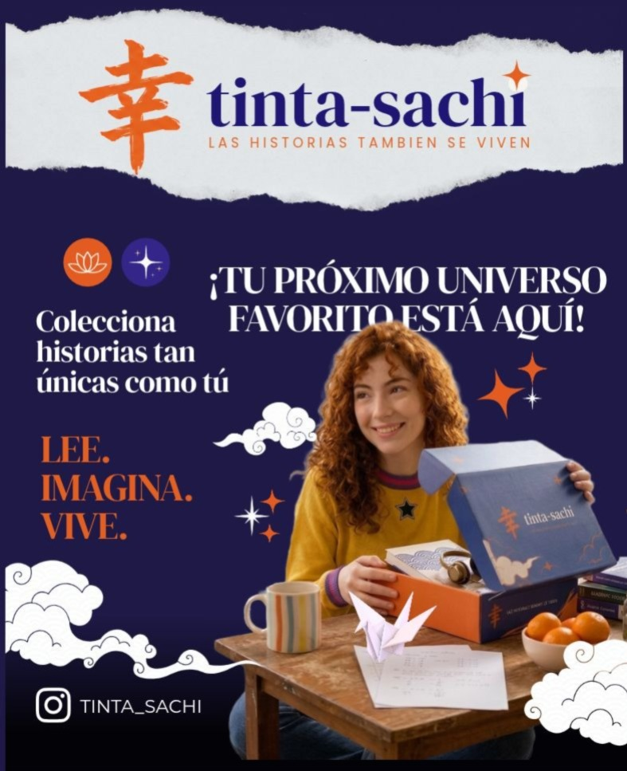
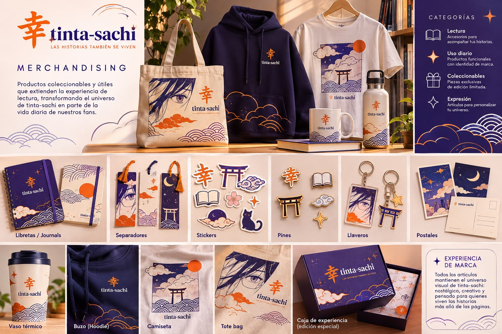
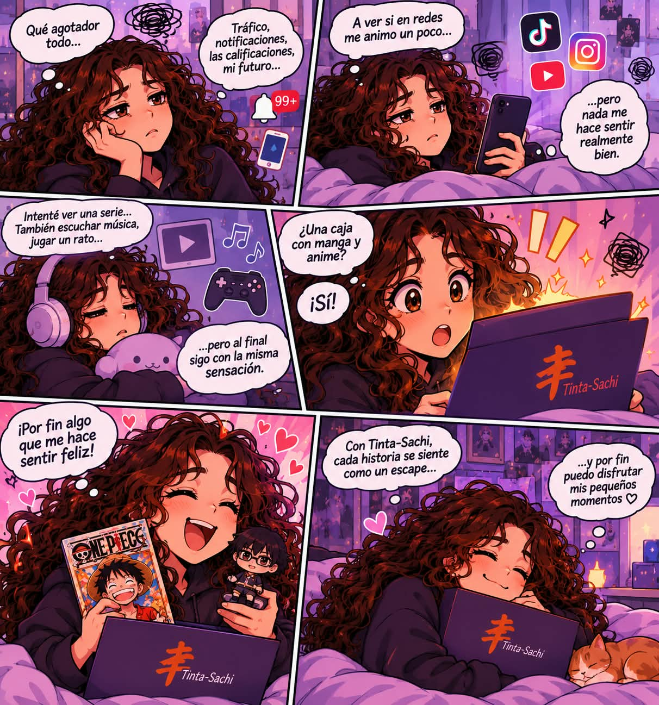

Tinta-Sachi transforma la lectura tradicional en un refugio sensorial coleccionable que une literatura curada, una canción original, piezas tangibles de edición especial y el gesto afectivo de regalar.
Representación digital de diseño del empaque autoarmable Tinta-Sachi.
Capítulo I · Visión Integral del Proyecto
Resumen ejecutivo y propósito del estudio
Síntesis estructurada del diseño de producto con marketing emocional, perfil del consumidor universitario, evaluación empírica mediante PREMO Emotions y propuesta de valor consolidada.
Emociones Positivas PREMO
8,20 / 10
100% de presencia en los 4 evaluadores
Emoción Predominante
8,75 / 10
Sorpresa agradable, seguida de Deseo (8,50)
Emociones Negativas
0,43 / 10
0,00 en Asco, Frustración, Vergüenza e Indignación
Decisión Estratégica
MANTENER
95,03% de masa emocional positiva (+7,77 pts)
Propósito del estudio
Desarrollar y fundamentar una propuesta de producto experiencial concebida desde el marketing emocional —Tinta-Sachi—, superando la venta fragmentada de artículos sueltos de cultura pop observada en comercios locales de Montería (mugs, camisetas o estampados aislados sin relato).
El estudio articula investigación empática del consumidor, narrativa gráfica, ingeniería de empaque y medición no verbal mediante el instrumento PrEmo para verificar la coherencia entre la intención afectiva diseñada y la respuesta real percibida.
Diseño del producto con marketing emocional
Bajo la promesa «Las historias también se viven», Tinta-Sachi fusiona la palabra española tinta (huella literaria e ilustrada) con el vocablo japonés sachi (幸, felicidad y buena fortuna).
Su arquitectura integra cuatro dimensiones en una caja autoarmable FEFCO 0427 (26 × 20 × 9 cm) vestida en índigo profundo (#1F1575) y naranja tinta (#E56020): LEE (obra impresa), ESCUCHA (canción original vía código QR), COLECCIONA (objetos de edición) y REGALA (tarjeta personalizable con sello 幸).
Público objetivo y aplicación de PREMO
El segmento primario corresponde a jóvenes universitarios de Montería, Córdoba (17 a 23 años, estratos 2 a 4), personificados en Juliana (20 años): lectora y fan de anime, fantasía y música contemporánea que enfrenta agotamiento académico y vacío tras horas de pantallas.
La validación emocional se realizó con cuatro evaluadores independientes (Evaluador 1 a Evaluador 4) sobre las 14 emociones de PrEmo en escala de intensidad de 0 a 10, capturando reacciones afectivas inmediatas tras explorar la experiencia sin sesgos previos.
Principales resultados y propuesta de valor
Las siete emociones positivas registraron activación unánime (promedio 8,20/10), encabezadas por Sorpresa agradable (8,75), Deseo (8,50) e Inspiración (8,50), junto con Satisfacción (8,25), Orgullo (8,25), Fascinación (8,13) y Nostalgia (7,00). Las negativas fueron mínimas (0,43/10), apareciendo únicamente Miedo leve (2,00), Aburrimiento (0,75) y Tristeza (0,25).
La propuesta de valor entrega un refugio nocturno tangible, curado y obsequiable que conecta con los niveles de pertenencia, reconocimiento y autorrealización de Maslow.
Conclusión general del resumen ejecutivo
El proyecto comprueba a nivel exploratorio que la diferenciación sostenible de Tinta-Sachi no proviene de los insumos físicos por separado, sino de la coreografía emocional que une lectura, música original, estética editorial japonesa y coleccionismo significativo. Al superar con holgura los criterios de validación PREMO (media positiva ≥ 7,0 y negativa ≤ 3,0), se ratifica la decisión de MANTENER el diseño integral, incorporando perfeccionamientos tácticos para elevar la memoria nostálgica y brindar claridad absoluta en la relación contenido-precio.
Capítulo II · Ingeniería y Narrativa del Producto
Anatomía de la caja Tinta-Sachi y sus especificaciones
Cada detalle material del empaque FEFCO 0427 fue proyectado para transformar el desempaque en un ritual pausado de anticipación, resguardo literario y calidez visual.
Estándar estructuralFEFCO 0427 · Caja mailer autoarmable con aletas de bloqueo
Sustrato y acabadoCartón microcorrugado flauta E (1,5 mm) con laminado mate
Capa de revelaciónPapel seda crema (20 g/m²) ilustrado + sello adhesivo 幸
Paleta cromática
Índigo #1F1575 ·
Naranja #E56020
Nota de transparencia: Las imágenes corresponden a representaciones digitales y planos técnicos documentados para el montaje del prototipo físico de demostración en aula.
Experiencia Interactiva Multisensorial
Las cuatro dimensiones: Lee, Escucha, Colecciona y Regala
Explora cada pilar constitutivo de Tinta-Sachi: elige un universo literario, reproduce la canción original de la marca, examina los coleccionables y personaliza una tarjeta con sello 幸.
MANGA & ANIME
Edición Shōnen: Espíritu de Travesía
Componente físico documentado en caja:

Pieza gráfica oficial Tinta-Sachi: Juliana viviendo la apertura de su caja coleccionable.
Acceso por tarjeta QR interior
Pista Musical Oficial · Experiencia Sonora
«Somewhere in Between»
Dentro de cada caja FEFCO 0427 reposa una tarjeta ilustrada (10 × 15 cm) con código QR que conecta la lectura y el audiovisual de marca con «Somewhere in Between», creando una atmósfera introspectiva que acompaña la pausa nocturna lejos del ruido exterior.
Verse 1 · El trayecto cotidiano«The bus rides home, the fading light / Another day, another night / I watch the city passing by / Like little scenes from someone's life… I say I'm fine, I'm doing great / Still counting dreams I haven't chased.»
Chorus · El refugio interior«Can we stay somewhere in between? / Who I am and who I'll be / All these dreams inside my head / All the words I never said… I'm not lost, I'm just unseen / Somewhere, somewhere in between.»
Conexión narrativa: retrata el regreso a casa al caer la tarde y el deseo de habitar un refugio propio entre las exigencias del presente y los sueños personales.
Objetos con Identidad Narrativa
Piezas coleccionables y extensión cotidiana
Selecciona cada componente para consultar sus materiales, acabados y función simbólica dentro de la experiencia de usuario:

Representación digital del ecosistema de piezas coleccionables y artículos de extensión diaria Tinta-Sachi.
Vínculo Afectivo y Dedicatoria
Personaliza la tarjeta ceremonial con sello 幸
La dimensión REGALA convierte cada caja en un obsequio curado —para alguien cercano o como autorregalo reparador— sin requerir envolturas adicionales.
Edición Coleccionable · Tinta-Sachi
Para: Juliana
Después de tantos desvelos y entregas, mereces cerrar las pestañas del celular y perderte en un universo hecho a tu ritmo. Las historias también se viven.
Cápsula de memoria literaria · Lee · Escucha · Colecciona · Regala
Capítulo III · Comprensión del Consumidor y Estrategia
Público objetivo analizado, narrativa y fundamentación
Del diagnóstico empático de Juliana en Montería a la construcción del arco narrativo, el viaje del cliente, la jerarquía de Maslow y el posicionamiento en la Matriz de Ansoff.
Insight emocional y decisión de compra selectiva
Juliana divide su rutina entre clases, transporte urbano, entregas grupales y decenas de notificaciones pendientes. Hacia su entorno proyecta seguridad y dinamismo, pero al llegar la noche experimenta sobrecarga ansiosa acompañada de un anhelo profundo de refugio tangible.
Aunque evita malgastar en artículos locales sueltos sin identidad (como mugs genéricos de $15.000–$25.000 COP o camisetas aisladas de $35.000 COP que no construyen experiencia), planifica y destina entre $80.000 y $110.000 COP para autorregalos de cierre de semestre o regalos especiales cuando una edición coleccionable completa ($80.000–$100.000 COP) reúne obra impresa, música, piezas exclusivas y empaque reutilizable.
Motivación profundaHabitar un espacio propio que valide su sensibilidad estética, lectora y cultural invirtiendo en experiencias que realmente perduren.
Sustitutos actuales superadosOcio digital pasivo (Netflix, TikTok), libros digitales sin ritual táctil y mercancía suelta carente de curaduría emocional.
Mapa de empatía profundo (6 cuadrantes)
Sistematización estructurada a partir del cartel físico construido por el equipo investigador, con cinco hallazgos específicos por dimensión conductual y afectiva:
✦ 幸 ✦

Ilustración original de 6 viñetas elaborada para el proyecto Tinta-Sachi.
Storytelling Emocional
Arco de transformación en seis viñetas
Cada escena nombra con precisión el estado afectivo de Juliana, evidenciando el quiebre entre la saturación digital inicial y la plenitud serena que habilita la caja:
Prueba crítica de indispensabilidad: Si se retira Tinta-Sachi del relato, la historia se interrumpe en el ciclo de frustración de las viñetas 1 a 3; ningún sustituto digital logró generar la pausa multisensorial tangible de las viñetas 4 a 6.
Viaje del Cliente (Antes · Durante · Después)
Curva emocional interactiva del Customer Journey
Haz clic en cualquier hito de la curva para inspeccionar el momento
Jerarquía de Maslow
Niveles superiores activos (3, 4 y 5)
Tinta-Sachi opera como núcleo central en Pertenencia (Nivel 3) al vincular al lector con comunidades narrativas y fortalecer lazos afectivos mediante el pilar Regala; asciende a Reconocimiento (Nivel 4) mediante pines y ediciones curadas que expresan identidad cultural propia; y estimula la Autorrealización (Nivel 5) al cultivar imaginación, lectura reflexiva y bienestar estético, respaldada por seguridad emocional (Nivel 2).
Matriz de Ansoff e Identidad
Estrategia de Desarrollo de Producto
Frente a una estrategia de simple penetración de precios con mercancía suelta, el proyecto adopta Desarrollo de Producto (Producto Nuevo · Mercado Actual): ofrecer a la comunidad universitaria lectora y fan ya existente en Montería una solución multisensorial integrada inédita en el mercado local, respaldada por una personalidad de marca Cómplice, Curiosa, Creativa y Cuidadosa.
Capítulo IV · Investigación Perceptual y Cuantitativa
Aplicación del instrumento PREMO y resultados emocionales
Evaluación empírica no verbal de las 14 emociones del modelo PrEmo (Pieter Desmet) en cuatro evaluadores independientes, análisis cuantitativo verificado, visualizaciones e interpretación.
Funcionamiento y protocolo del instrumento PREMO
El instrumento PrEmo (Product Emotion Measurement), formulado por Pieter Desmet y colaboradores (Desmet, 2003b, 2018; Laurans & Desmet, 2017), mide respuestas afectivas inmediatas frente a productos mediante catorce emociones discretas representadas visualmente: siete positivas (Deseo, Satisfacción, Fascinación, Sorpresa agradable, Orgullo, Inspiración y Nostalgia) y siete negativas (Asco, Aburrimiento, Tristeza, Frustración, Miedo, Vergüenza e Indignación).
Su aplicación evita que el participante filtre racionalmente su vivencia. En el procedimiento ejecutado, cada evaluador exploró de manera autónoma durante 2 a 3 minutos la propuesta física-digital de Tinta-Sachi —incluyendo empaque, narrativa y escucha con audífonos de «Somewhere in Between»— sin recibir explicaciones previas que indujeran la respuesta.
Participantes, escala y rigor metodológico
Participaron cuatro evaluadores independientes afines al segmento universitario objetivo, identificados rigurosamente como Evaluador 1, Evaluador 2, Evaluador 3 y Evaluador 4, excluyendo a los integrantes del equipo diseñador para prevenir sesgos de autoría.
Las valoraciones individuales se registraron en una escala cuantitativa de intensidad de 0 a 10 (donde 0 indica ausencia de la emoción y 10 intensidad máxima), estableciendo como regla de decisión conservar el diseño si la media positiva alcanzaba ≥ 7,0/10 y la negativa permanecía en ≤ 3,0/10. Los análisis presentados provienen exclusivamente de dicha matriz cuantitativa documentada; al no existir transcripciones textuales literales ni datos biográficos individuales archivados, el estudio preserva el anonimato sin añadir testimonios supuestos.
Matriz de resultados individuales (4 evaluadores × 14 emociones)
Emoción PREMO y definición operativa
Valencia
Eval. 1
Eval. 2
Eval. 3
Eval. 4
Frecuencia (>0)
Suma
Promedio (0–10)
% Masa Total
Gráfico 1 · Distribución General
Distribución general de emociones PREMO (intensidad media y presencia)
Interpretación del Gráfico 1: Las siete emociones positivas registran presencia del 100% (4/4 evaluadores) y superan o igualan el umbral objetivo de 7,0 puntos (línea punteada verde). Sorpresa agradable (8,75/10), Deseo (8,50/10) e Inspiración (8,50/10) encabezan la respuesta emocional, seguidas muy de cerca por Satisfacción (8,25), Orgullo (8,25) y Fascinación (8,13), mientras que Nostalgia se sitúa en 7,00. En contraste, ninguna emoción negativa se aproxima al techo crítico de 3,0 (línea punteada roja), destacando la ausencia absoluta (0,00) de Asco, Frustración, Vergüenza e Indignación.
Gráfico 2 · Análisis Intersujeto
Comparación de los cuatro evaluadores en emociones activas
Evaluador 1 Evaluador 2 Evaluador 3 Evaluador 4
Interpretación del Gráfico 2: La comparación intersujeto evidencia una recepción consistentemente favorable acompañada de variaciones individuales naturales. El Evaluador 3 registra el perfil más entusiasta (media positiva de 8,57/10 y calificación máxima de 10,0 en Sorpresa agradable); el Evaluador 2 (8,21/10) destaca en Deseo y Sorpresa (9,0) pero expresa la mayor sensibilidad relativa en Miedo (3,0); el Evaluador 4 (8,14/10) sobresale en Satisfacción y Deseo (9,0) con mínimo Miedo (1,0) y leve Aburrimiento (2,0); y el Evaluador 1 (7,86/10) prioriza las dimensiones simbólicas de Orgullo e Inspiración (9,0).
Gráfico 3 · Estructura Relativa
Distribución porcentual de las emociones predominantes y masa afectiva
Interpretación del Gráfico 3: Sobre los 229,50 puntos acumulados en el bloque positivo, los pesos relativos oscilan de forma equilibrada entre el 15,25% de Sorpresa agradable y el 12,20% de Nostalgia (suma exacta del 100,00%; 99,99% por redondeo). Al considerar el volumen afectivo completo de la prueba (241,50 puntos), el 95,03% corresponde a emociones positivas frente a solo un 4,97% negativo residual, demostrando que la experiencia activa un espectro hedónico completo en lugar de depender de un estímulo aislado.
Gráfico 4 · Síntesis Global
Resumen de la valoración global por dimensión y decisión estratégica
Interpretación del Gráfico 4: El balance ejecutivo ratifica un diferencial neto de +7,77 puntos sobre 10 y un Índice Complementario de Afinidad Global de 88,86/100 (indicador analítico derivado, diferenciado de la escala primaria PREMO). Todas las dimensiones superan los 7,80 puntos en sus emociones asociadas, validando la decisión estratégica de MANTENER la arquitectura del producto con mejoras puntuales focalizadas en Nostalgia y claridad de precio.
Relación entre emociones y atributos del producto
Siguiendo la teoría de valoración cognitiva (appraisal) en diseño de producto, la siguiente matriz establece asociaciones interpretativas —sin atribuir causalidad experimental aislada— entre los componentes de Tinta-Sachi y las respuestas emocionales medidas:
Atributo o componente del producto
Emociones PREMO asociadas
Fundamento interpretativo en la experiencia
Interpretación de los Resultados (Parte I)
Predominio emocional, marketing afectivo y componentes de valor
1. Emociones predominantes y origen de la recepción positiva: El liderazgo simultáneo de Sorpresa agradable (8,75), Deseo (8,50) e Inspiración (8,50) revela que Tinta-Sachi genera tanto atracción inmediata como resonancia creativa. Esta recepción se explica por el contraste entre un empaque editorial cuidado y la fragmentación habitual de los artículos comerciales sueltos.
2. Conexión con el marketing emocional y aportes de mayor valor: Los datos confirman que el usuario valora el significado afectivo por encima de la utilidad aislada (Hassenzahl, 2010). Los componentes que mayor valor diferencial aportan son el ritual de apertura del sello 幸 con papel seda ilustrado y la sorpresa de acceder mediante QR a una canción compuesta para acompañar la lectura.
Interpretación de los Resultados (Parte II)
Oportunidades de mejora, propuesta de valor y objetivos
3. Aspectos susceptibles de mejora: Aunque el promedio negativo es marginal (0,43/10), la aparición leve pero transversal de Miedo (2,00/10) en los cuatro evaluadores guarda coherencia directa con el Pain Point financiero detectado en el viaje de Juliana: la cautela estudiantil frente al precio percibido de una edición premium o el temor a maltratar piezas coleccionables. Asimismo, Nostalgia (7,00/10) ofrece margen de crecimiento frente a las demás emociones positivas, mientras que el leve Aburrimiento puntual (0,75/10) sugiere mantener textos complementarios ágiles.
4. Conclusión específica de PREMO: En coherencia con los objetivos del estudio, la evaluación valida el potencial de Tinta-Sachi como experiencia multisensorial coherente. Dado el carácter exploratorio de la muestra (n = 4), estos resultados no se extrapolan como censo de mercado general, pero sustentan con rigor empírico la continuidad y refinamiento del prototipo.
Laboratorio Interactivo PREMO en Aula · Simulador de captura individual y exportación CSVDesplegar herramienta ↓
Herramienta complementaria para demostraciones en vivo: permite a un nuevo participante calificar las 14 emociones en escala de 0 a 10 tras interactuar con la caja y exportar su ficha individual en formato CSV sin alterar la matriz consolidada del estudio.
Emociones Positivas (1–7)
Emociones Negativas (8–14)
Capítulo V · Síntesis Académica y Proyección
Propuesta de valor, discusión teórica, conclusiones y recomendaciones
Integración de la literatura científica con los hallazgos empíricos de Tinta-Sachi, ajustes derivados del análisis PREMO y lineamientos futuros de investigación.
Propuesta de Valor Refinada Post-PREMO
Un refugio narrativo multisensorial accesible y memorable
Tinta-Sachi ofrece a jóvenes lectores y seguidores de universos narrativos en Montería una caja coleccionable de 26 × 20 × 9 cm (FEFCO 0427), valorizada en un rango estimado de $80.000 a $100.000 COP según edición, que convierte el descanso nocturno o el acto de obsequiar en una experiencia emocional completa: LEE una obra seleccionada, ESCUCHA la pista oficial «Somewhere in Between» mediante código QR, COLECCIONA insignias ilustradas en índigo (#1F1575) y naranja (#E56020), y REGALA una dedicatoria sellada con el kanji 幸.
A partir de la evidencia cuantitativa PREMO, la propuesta final incorpora dos optimizaciones concretas: (1) Cápsula de memoria fechada en el interior del libro para impulsar la dimensión de Nostalgia (7,00/10) hacia el recuerdo personal duradero, y (2) Ficha transparente de contenido garantizado más cunas internas protectoras para reducir la incertidumbre presupuestal y de conservación reflejada en el indicador leve de Miedo (2,00/10).
Fundamentación Científica y Discusión
Articulación teórica del estudio
El marketing emocional sostiene que la preferencia sostenible surge cuando las marcas dialogan con la identidad, la memoria afectiva y los estados internos del consumidor más allá de los atributos utilitarios (Gobé, 2001; Morrison & Crane, 2007). Brakus et al. (2009) demostraron que la experiencia de marca integra dimensiones sensoriales, afectivas, intelectuales y conductuales que inciden directamente en la lealtad.
Investigaciones empíricas confirman que la intensidad del apego emocional predice el compromiso frente a sustitutos económicos (Thomson et al., 2005; Khuong & Tram, 2015; Juárez-Varón et al., 2023; Kim & Sullivan, 2019; Santos, 2024). En Tinta-Sachi, este principio se traduce en sustituir mercancía transaccional aislada por un ritual con significado propio, reflejado en el 8,50/10 de Deseo y 8,25/10 de Orgullo.
Desde la experiencia del usuario (UX emocional), Hassenzahl y Tractinsky (2006) y Hassenzahl (2010) distinguen entre cualidades pragmáticas y cualidades hedónicas de identificación y estimulación, siendo estas últimas decisivas para el recuerdo afectivo. De forma convergente, Norman (2004) estructura el diseño emocional en tres niveles que Tinta-Sachi activa secuencialmente: visceral (impacto cromático índigo-naranja y textura mate; Tractinsky et al., 2000; Silvennoinen et al., 2026), conductual (apertura fluida FEFCO 0427 y acceso directo al audio sin Frustración: 0,00/10) y reflexivo (simbolismo del kanji 幸 y dedicatoria personalizable).
Asimismo, el equilibrio entre estética, significado y emoción (Desmet & Hekkert, 2007; Jordan, 2000; Demir et al., 2009; Büker et al., 2023; van Remmen et al., 2024) y el contraste narrativo desde el agobio cotidiano hacia el alivio (Fokkinga & Desmet, 2012; Desmet, 2012) explican la alta intensidad alcanzada en Sorpresa agradable (8,75/10).
Los resultados obtenidos concuerdan con hallazgos recientes sobre empaques multisensoriales (Xiao et al., 2025), donde la combinación cuidada de tacto, color y narrativa de apertura eleva el compromiso afectivo, siempre que se evite la sobrecarga sensorial. La coherencia transversal entre el Mapa de Empatía, el cómic de seis viñetas, el Customer Journey, la Matriz de Ansoff y el prototipo quedó respaldada por la ausencia total de Frustración, Asco o Indignación (0,00/10).
Como limitaciones metodológicas propias de un diseño exploratorio académico, se reconocen el tamaño muestral reducido no probabilístico (n = 4 evaluadores por conveniencia), la concentración del registro en puntuaciones cuantitativas sin entrevistas abiertas transcritas y la evaluación sobre prototipo académico previo a producción en serie.
Síntesis Final
Conclusiones del estudio
Comprensión emocional del consumidor: El verdadero competidor de Tinta-Sachi en el segmento universitario no es otra librería local, sino la fatiga mental y el ocio digital pasivo que carecen de abrigo sensorial.
Validación mediante PREMO: El instrumento no verbal demostró una respuesta afectiva altamente positiva (8,20/10 frente a 0,43/10 negativo), validando el liderazgo de Sorpresa agradable (8,75), Deseo (8,50) e Inspiración (8,50) y detectando con sensibilidad la cautela presupuestal en Miedo leve (2,00).
Valor estratégico del marketing emocional: Articular literatura, canción propia, coleccionables y regalo desplaza el producto hacia los niveles superiores de Maslow (3, 4 y 5) y sustenta la estrategia de Desarrollo de Producto en Ansoff.
Coherencia integral de marca: Cuando empaque FEFCO 0427, paleta cromática, narrativa y sonido obedecen a una misma promesa emocional, la marca construye pertenencia y evita competir únicamente por precio.
Hoja de Ruta Futura
Recomendaciones
Ampliación muestral y captura mixta: Escalar la evaluación PREMO a una muestra de 25 a 35 estudiantes universitarios en Montería segmentados por género literario, integrando entrevistas breves grabadas post-apertura para enriquecer el análisis cualitativo.
Transparencia de valor en el rango de precio ($80.000–$100.000 COP): Exhibir de forma previa el desglose completo de las piezas incluidas en cada edición coleccionable y ofrecer preventas programadas para respaldar la decisión de compra universitaria y reducir el indicador leve de Miedo (2,00/10).
Pruebas experimentales A/B del estímulo musical: Ejecutar un diseño comparativo A/B entre cajas con y sin canción original vía QR para aislar experimentalmente su efecto sobre la Fascinación, la Nostalgia y la disposición a pagar (Xiao et al., 2025).
Continuidad comunitaria post-compra: Implementar votaciones abiertas entre lectores para seleccionar los próximos universos literarios y fortalecer la recompra por colección.
Referencias bibliográficas verificadas (26 fuentes académicas en norma APA 7.ª edición)Consultar bibliografía ↓